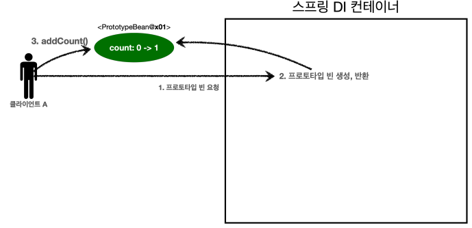
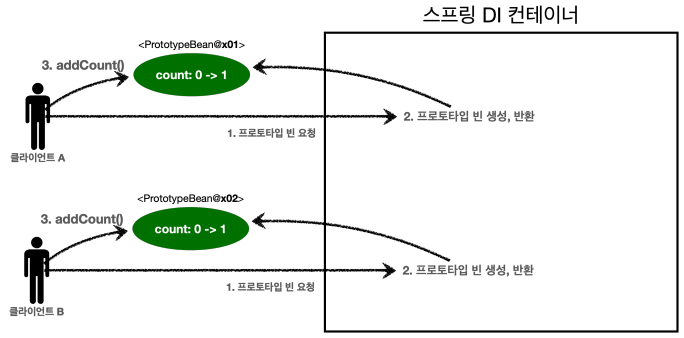
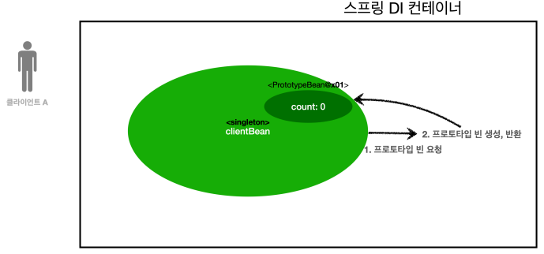
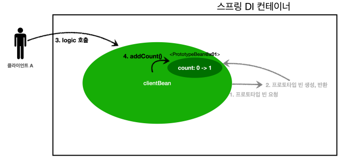
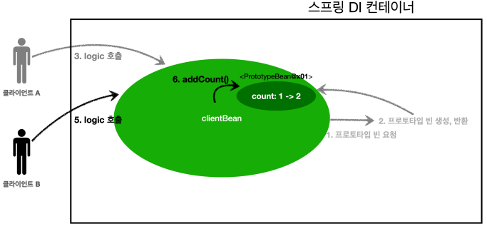

빈 스코프란?
지금까지 나는 스프링 빈이 스프링이 스프링 컨테이너의 시작과 함께 생성되어서 스프링 컨테이너가
종료될 때 까지 유지된다고 학습했다. 이것은 스프링 빈이 기본적으로 싱글톤 스코프로 생성되기
때문이다. 스코프는번역 그대로 빈이 존재할 수 있는 범위를 뜻한다.
스프링은 다음과 같은 다양한 스코프를 지원한다.
- 싱글톤: 기본 스코프, 스프링 컨테이너의 시작과 종료까지 유지되는 가장 넓은 범위의 스코프
- 프로토타입: 스프링 컨테이너는 프로토타입 빈의 생성과 의존관계 주입까지만 관여하고
더는 관리하지 않는 매우 짧은 범위의 스코프
-
웹 관련 스코프
- request: 웹 요청이 들어오고 나갈 때 까지 유지되는 스코프
- session: 웹 세션이 생성되고 종료될 때 까지 유지되는 스코프
- application: 웹의 서블릿 컨텍스트와 같은 범위로 유지되는 스코프
컴포넌트 스캔 자동 등록
@Scope("prototype")
@Component
public class HelloBean {}
수동 등록
@Scope("prototype")
@Bean
PrototypeBean HelloBean() {
return new HelloBean();
}
지금까지 싱글톤 스코프를 계속 사용해 보았으니, 프로토타입 스코프부터 확인해보자.
프로토타입 스코프
싱글톤 스코프의 빈을 조회하면 스프링 컨테이너는 항상 같은 인스턴스의 스프링 빈을 반환한다. 반면에 프로토타입 스코프를
스프링 컨테이너에 조회하면 스프링 컨테이너는 항상 새로운 인스턴스를 생성해서 반환한다.
싱글톤 빈 요청
- 1. 싱글톤 스코프의 빈을 스프링 컨테이너에 요청한다.
- 2. 스프링 컨테이너는 본인이 관리하는 스프링 빈을 반환한다.
- 3. 이후에 스프링 컨테이너에 같은 요청이 와도 같은 객체 인스턴스의 스프링 빈을 반환한다.
프로토타입 빈 요청
- 1. 프로토타입 스코프의 빈을 스프링 컨테이너에 요청한다.
- 2. 스프링 컨테이너는 이 시점에 프로토타입 빈을 생성하고, 필요한 의존관계를 주입한다.
- 3. 스프링 컨테이너는 생성한 프로토타입 빈을 클라이언트에 반환한다.
- 4. 이후에 스프링 컨테이너에 같은 요청이 오면 항상 새로운 프로토타입 빈을 생성해서 반환한다.
정리
여기서 핵심은 스프링 컨테이너는 프로토타입 빈을 생성하고, 의존관계 주입, 초기화까지만 처리한다는 것이다.
클라이언트에 빈을 반환하고, 이후 스프링 컨테이너는 생성된 프로토타입 빈을 관리하지 않는다. 프로토타입 빈을 관리할 책임
은 프로토타입을 받은 클라이언트에 있다. 그래서 @PreDestroy 같은 종료 메서드가 호출되지 않는다.
코드로 확인해보자.
싱글톤 스코프 빈 테스트
//싱글톤 스코프의 빈을 조회하는 singletonBeanFind() 테스트
public class SingletonTest {
@Test
public void singletonBeanFind() {
AnnotationConfigApplicationContext ac = new AnnotationConfigApplicationContext(SingletonBean.class);
SingletonBean singletonBean1 = ac.getBean(SingletonBean.class);
SingletonBean singletonBean2 = ac.getBean(SingletonBean.class);
System.out.println("singletonBean1 = " + singletonBean1);
System.out.println("singletonBean2 = " + singletonBean2);
assertThat(singletonBean1).isSameAs(singletonBean2);
ac.close(); //종료
}
@Scope("singleton")
static class SingletonBean {
@PostConstruct
public void init() {
System.out.println("SingletonBean.init");
}
@PreDestroy
public void destroy() {
System.out.println("SingletonBean.destroy");
}
}
}
실행 결과
SingletonBean.init
singletonBean1 = hello.core.scope.PrototypeTest$SingletonBean@54504ecd
singletonBean2 = hello.core.scope.PrototypeTest$SingletonBean@54504ecd
org.springframework.context.annotation.AnnotationConfigApplicationContext -
Closing SingletonBean.destroy
프로토타입 스코프 빈 테스트
//프로토타입 스코프의 빈을 조회하는 prototypeBeanFind() 테스트
public class PrototypeTest {
@Test
public void prototypeBeanFind() {
AnnotationConfigApplicationContext ac = new
AnnotationConfigApplicationContext(PrototypeBean.class);
System.out.println("find prototypeBean1");
PrototypeBean prototypeBean1 = ac.getBean(PrototypeBean.class);
System.out.println("find prototypeBean2");
PrototypeBean prototypeBean2 = ac.getBean(PrototypeBean.class);
System.out.println("prototypeBean1 = " + prototypeBean1);
System.out.println("prototypeBean2 = " + prototypeBean2);
assertThat(prototypeBean1).isNotSameAs(prototypeBean2);
ac.close(); //종료
}
@Scope("prototype")
static class PrototypeBean {
@PostConstruct
public void init() {
System.out.println("PrototypeBean.init");
}
@PreDestroy
public void destroy() {
System.out.println("PrototypeBean.destroy");
}
}
}
실행 결과
find prototypeBean1
PrototypeBean.init
find prototypeBean2
PrototypeBean.init
prototypeBean1 = hello.core.scope.PrototypeTest$PrototypeBean@13d4992d
prototypeBean2 = hello.core.scope.PrototypeTest$PrototypeBean@302f7971
org.springframework.context.annotation.AnnotationConfigApplicationContext -
Closing
- 싱글톤 빈은 스프링 컨테이너 생성 시점에 초기화 메서드가 실행 되지만, 프로토타입 스코프의 빈은 스프링 컨테
이너에서 빈을 조회할 때 생성되고, 초기화 메서드도 실행된다.
- 프로토타입 빈을 2번 조회했으므로 완전히 다른 스프링 빈이 생성되고, 초기화도 2번 실행된 것을 확인할 수 있다
- 싱글톤 빈은 스프링 컨테이너가 관리하기 때문에 스프링 컨테이너가 종료될 때 빈의 종료 메서드가 실행되지만,
프로토타입 빈은 스프링 컨테이너가 생성과 의존관계 주입 그리고 초기화 까지만 관여하고, 더는 관리하지 않는
다. 따라서 프로토타입 빈은 스프링 컨테이너가 종료될 때 @PreDestroy 같은 종료 메서드가 전혀 실행되지 않
는다.
프로토타입 빈의 특징 정리
- 스프링 컨테이너에 요청할 때 마다 새로 생성된다.
- 스프링 컨테이너는 프로토타입 빈의 의존관계 주입 그리고 초기화까지만 관여한다.
- 종료 메서드가 호출되지 않는다
- 그래서 프로토타입 빈은 프로토타입 빈을 조회한 클라이언트가 관리해야 한다. 종료 메서드에 대한 호출도
클라이언트가 직접 해야한다.
프로토타입 스코프 - 싱글톤 빈과 함께 사용시 문제점
스프링 컨테이너에 프로토타입 스코프의 빈을 요청하면 항상 새로운 객체 인스턴스를 생성해서 반환한다. 하지만
싱글톤 빈과 함께 사용할 때는 의도한 대로 잘 동작하지 않으므로 주의해야 한다.
프로토타입 빈직접 요청

- 1. 클라이언트 A는 스프링 컨테이너에 프로토타입 빈을 요청한다.
- 2. 스프링 컨테이너는 프로토타입 빈을 새로 생성해서 반환(x01)한다. 해당 빈의 count 필드 값은 0이다.
- 3. 클라이언트는 조회한 프로토타입 빈에 addCount()를 호출하면서 count 필드를 +1 한다.
- 결과적으로 프로토타입 빈(x01)의 count는 1이 된다.

- 1. 클라이언트 B는 스프링 컨테이너에 프로토타입 빈을 요청한다.
- 2. 스프링 컨테이너는 프로토타입 빈을 새로 생성해서 반환(x02)한다. 해당 빈의 count 필드 값은 0이다.
- 3. 클라이언트는 조회한 프로토타입 빈에 addCount()를 호출하면서 count 필드를 +1 한다.
- 결과적으로 프로토타입 빈(x02)의 count는 1이 된다.
싱글톤 빈에서 프로토타입 빈 사용

- clientBean은 싱글톤이므로, 보통 스프링 컨테이너 생성 시점에 함께 생성되고, 의존관계 주입도 발생한다.
- 1. clientBean은 의존관계 자동 주입을 사용한다. 주입 시점에 스프링 컨테이너에 프로토타입 빈을 요청한다.
- 2. 스프링 컨테이너는 프로토타입 빈을 생성해서 clientBean에 반환한다. 프로토타입 빈의 count 필드 값은 0이다.
- 이제 clientBean은 프로토타입 빈을 내부 필드에 보관한다. (정확히는 참조값을 보관한다.)

- 클라이언트 A는 clientBean 을 스프링 컨테이너에 요청해서 받는다.싱글톤이므로 항상 같은 clientBean
이 반환된다.
- 3. 클라이언트 A는 clientBean.logic() 을 호출한다.
- 4. clientBean 은 prototypeBean의 addCount() 를 호출해서 프로토타입 빈의 count를 증가한다.
count값이 1이 된다.

- 클라이언트 B는 clientBean 을 스프링 컨테이너에 요청해서 받는다.싱글톤이므로 항상 같은 clientBean
이 반환된다.
- 여기서 중요한 점이 있는데, clientBean이 내부에 가지고 있는 프로토타입 빈은 이미 과거에 주입이 끝난 빈이
다. 주입 시점에 스프링 컨테이너에 요청해서 프로토타입 빈이 새로 생성이 된 것이지, 사용 할 때마다 새로 생성되
는 것이 아니다.
- 5. 클라이언트 B는 clientBean.logic() 을 호출한다.
- 6. clientBean 은 prototypeBean의 addCount() 를 호출해서 프로토타입 빈의 count를 증가한다. 원
래 count 값이 1이었으므로 2가 된다.
스프링은 일반적으로 싱글톤 빈을 사용하므로, 싱글톤 빈이 프로토타입 빈을 사용하게 된다. 그런데 싱글톤 빈은
생성 시점에만 의존관계 주입을 받기 때문에, 프로토타입 빈이 새로 생성되기는 하지만, 싱글톤 빈과 함께 계속
유지되는 것이 문제다.
아마 원하는 것이 이런 것은 아닐 것이다. 프로토타입 빈을 주입 시점에만 새로 생성하는게 아니라, 사용할 때
마다 새로 생성해서 사용하는 것을 원할 것이다.
여러 빈에서 같은 프로토타입 빈을 주입 받으면, 주입 받는 시점에 각각 새로운 프로토타입 빈이 생성
된다. 예를 들어서 clientA, clientB가 각각 의존관계 주입을 받으면 각각 다른 인스턴스의 프로토타입 빈을 주입 받는다.
clientA => prototypeBean@x01
clientB => prototypeBean@x02
물론 사용할 때 마다 새로 생성되는 것은 아니다.